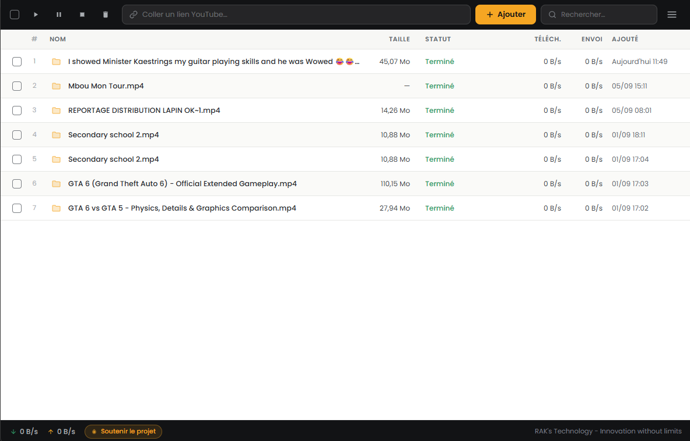

RAK'S TECHNOLOGY
Téléchargez.
Regardez. Libre.
Vos vidéos YouTube préférées, prêtes à vous suivre partout.
Télécharger RAK's Tube Disponible pour WindowsRAK'S TECHNOLOGY
Vos vidéos YouTube préférées, prêtes à vous suivre partout.
Télécharger RAK's Tube Disponible pour Windows
Innovation without limits